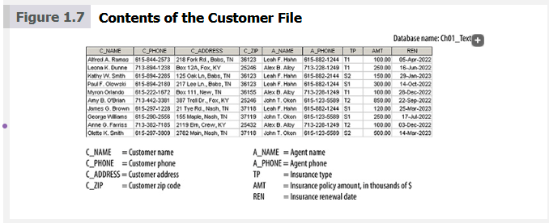
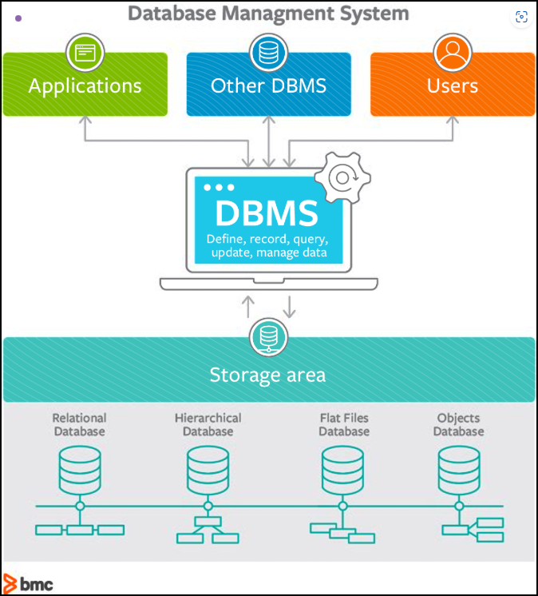
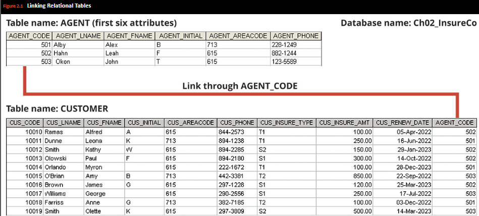
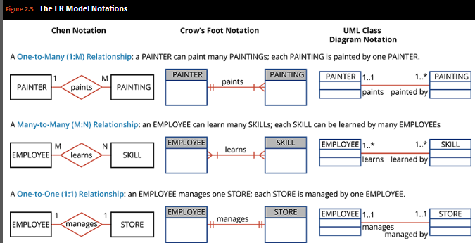
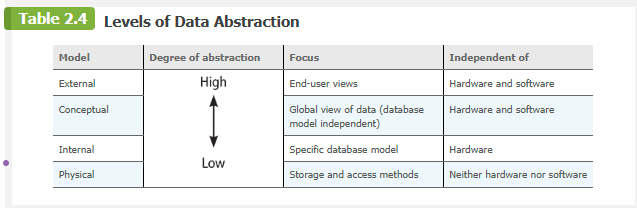
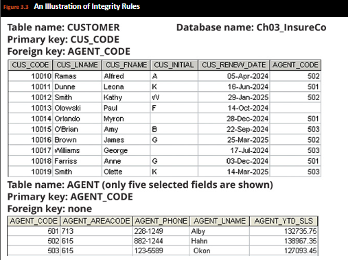
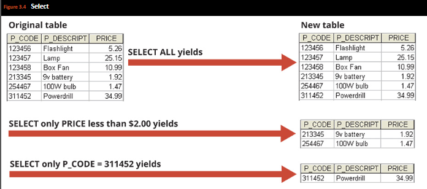
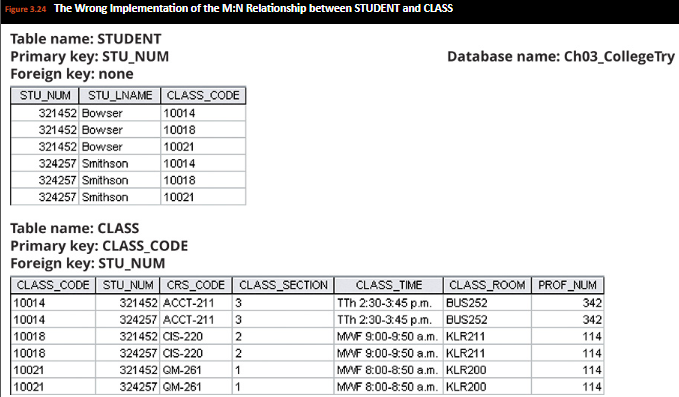
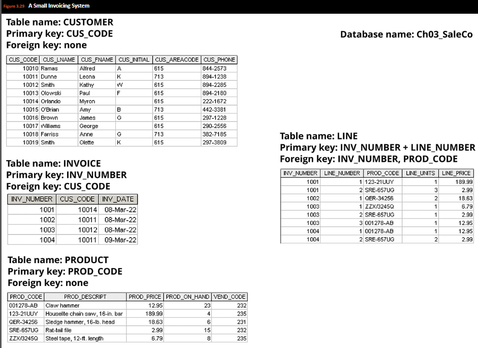
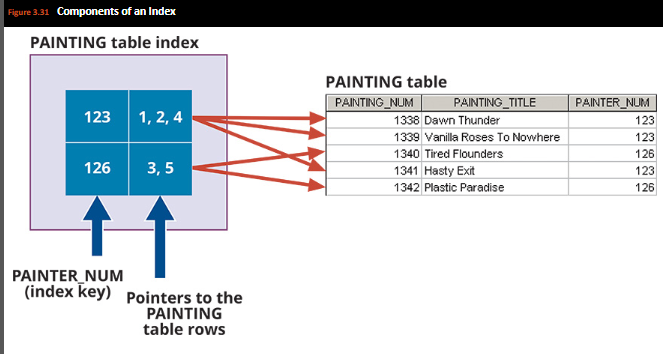

Chapter 1: Introduction to Databases
Chapter 1: Database Systems
This chapter introduces the fundamental concepts of database systems, explaining why databases are essential, the difference between data and information, and the importance of proper database design.
1-1 Why Databases?
In today's world, data is ubiquitous (abundant, global, everywhere) and pervasive (unescapable, prevalent, persistent). From birth to death, we generate and consume data. The trail of data starts with the birth certificate and continues all the way to a death certificate (and beyond!). In between, each individual produces and consumes enormous amounts of data. As you will see in this book, databases are the best way to store and manage data. Databases make data persistent and shareable in a secure way.
Data is not only ubiquitous and pervasive; it is also essential for organizations to survive and prosper. Imagine trying to operate a business without knowing who your customers are, what products you are selling, who is working for you, who owes you money, and to whom you owe money. All businesses have to keep this type of data and much more. Just as important, they must have that data available to decision makers when necessary. It can be argued that the ultimate purpose of all business information systems is to help businesses use information as an organizational resource. At the heart of all of these systems are the collection, storage, aggregation, manipulation, dissemination, and management of data.
Depending on the type of information system and the characteristics of the business, this data could vary from a few megabytes on just one or two topics to petabytes covering hundreds of topics within the business's internal and external environment. Telecommunications companies, such as Sprint and AT&T, are known to have systems that keep data on trillions of phone calls, with new data being added to the system at speeds up to 70,000 calls per second! Not only do these companies have to store and manage immense collections of data, but they must be able to find any given fact in that data quickly. Consider the case of Internet search staple Google. While Google is reluctant to disclose many details about its data storage specifications, it is estimated that the company responds to over 91 million searches per day across a collection of data that is several terabytes in size. Impressively, the results of these searches are available almost instantly.
How can these businesses process this much data? How can they store it all, and then quickly retrieve just the facts that decision makers want to know, just when they want to know it? The answer is that they use databases. Databases, as explained in detail throughout this book, are specialized structures that allow computer-based systems to store, manage, and retrieve data very quickly. Virtually all modern business systems rely on databases. Therefore, a good understanding of how these structures are created and their proper use is vital for any information systems professional. Even if your career does not take you down the amazing path of database design and development, databases will be a key component of the systems that you use. In any case, you will probably make decisions in your career based on information generated from data. Thus, it is important that you know the difference between data and information.
1-2 Data versus Information
To understand what drives database design, you must understand the difference between data and information. Data consists of raw facts. The word raw indicates that the facts have not yet been processed to reveal their meaning.
Data
Raw facts that have not yet been processed to reveal their meaning.
Information
The result of processing raw data to reveal its meaning. Data processing can be as simple as organizing data to reveal patterns or as complex as making forecasts or drawing inferences using statistical modeling.
Information requires context to reveal meaning. For example, an average temperature reading of 105 degrees does not mean much unless you also know its context: Is this reading in degrees Fahrenheit or Celsius? Is this a machine temperature, a body temperature, or an outside air temperature? Information can be used as the foundation for decision making.
Keep in mind that raw data must be properly formatted for storage, processing, and presentation. For example, dates might be stored in Julian calendar formats within the database, but displayed in a variety of formats, such as day-month-year or month/day/year, for different purposes.
Key Points:
- Data constitutes the building blocks of information.
- Information is produced by processing data.
- Information is used to reveal the meaning of data.
- Accurate, relevant, and timely information is the key to good decision making.
- Good decision making is the key to organizational survival in a global environment.
Example: Smartphone Location Data
In today's information-centric society, you use smartphones on a daily basis. These devices have advanced GPS functionality that constantly tracks your whereabouts. This data is stored and shared with various applications.
When you get a new smartphone, you can use the map application to go places and to set up your home address. The GPS feature in your phone tracks your daily locations. In some cases, the information generated is very helpful: it can help you navigate to various locations and even to find where you parked your car.
Furthermore, your smartphone may know more about your activities than you imagine. For example, suppose that every Wednesday night you go to the gym and play indoor soccer with your friends. Next Wednesday night, 20 minutes before you leave home, your phone pops up a message saying "19 minutes to [gym address]. Traffic is light." The phone has been storing GPS data on your movements to develop patterns based on days, times, and locations to generate this knowledge.
1-3 Introducing the Database
Efficient data management typically requires the use of a computer database.
Database
A shared, integrated computer structure that stores a collection of:
- End-user data—that is, raw facts of interest to the end user
- Metadata, or data about data, through which the end-user data is integrated and managed
The metadata describes the data characteristics and the set of relationships that links the data found within the database. For example, the metadata component stores information such as the name of each data element, the type of values (numeric, dates, or text) stored on each data element, and whether the data element can be left empty. The metadata provides information that complements and expands the value and use of the data. In short, metadata presents a more complete picture of the data in the database. Given the characteristics of metadata, you might hear a database described as a "collection of self-describing data."
Database Management System (DBMS)
A collection of programs that manages the database structure and controls access to the data stored in the database. In a sense, a database resembles a very well-organized electronic filing cabinet in which powerful software (the DBMS) helps manage the cabinet's contents.
1-3a Role and Advantages of the DBMS
The DBMS serves as the intermediary between the user and the database. The database structure itself is stored as a collection of files, and the only way to access the data in those files is through the DBMS.
Having a DBMS between the end user's applications and the database offers some important advantages:
- Improved data sharing. The DBMS helps create an environment in which end users have better access to more and better-managed data.
- Improved data security. The DBMS provides a framework for better enforcement of data privacy and security policies.
- Better data integration. Wider access to well-managed data promotes an integrated view of the organization's operations and a clearer view of the big picture.
- Minimized data inconsistency. The probability of data inconsistency is greatly reduced in a properly designed database.
- Improved data access. The DBMS makes it possible to produce quick answers to ad hoc queries.
- Improved decision making. Better-managed data and improved data access make it possible to generate better-quality information.
- Increased end-user productivity. The availability of data, combined with the tools that transform data into usable information, empowers end users to make quick, informed decisions.
1-3b Types of Databases
A DBMS can be used to build many types of databases. Each database stores a particular collection of data and is used for a specific purpose. Databases can be classified by:
- Number of users: Single-user (desktop database) or multiuser (workgroup database, enterprise database)
- Location: Centralized database, distributed database, or cloud database
- Type of data: General-purpose databases or discipline-specific databases
- Usage and time sensitivity: Operational database (OLTP) or analytical database
- Degree of structure: Structured data, semistructured data, or unstructured data
1-4 Why Database Design Is Important
Database design refers to the activities that focus on the design of the database structure that will be used to store and manage end-user data. A database that meets all user requirements does not just happen; its structure must be designed carefully. In fact, database design is such a crucial aspect of working with databases that most of this book is dedicated to the development of good database design techniques. Even a good DBMS will perform poorly with a badly designed database.
Data is one of an organization's most valuable assets. Data on customers, employees, orders, and receipts is all vital to the existence of a company. Tracking key growth and performance indicators are also vital to strategic and tactical plans to ensure future success; therefore, an organization's data must not be handled lightly or carelessly.
Example: Poor Database Design
Consider the data which illustrates the efforts of an organization to keep records about its employees and their skills. Some employees have not passed a certification test in any skill, while others have been certified in several skills. Some certified skills are shared by several employees, while other skills have no employees that hold those certifications.
Based on a poor storage design, the following problems might occur:
- It would be difficult to produce an alphabetical listing of employees based on their last names.
- To determine how many employees are certified in a specific skill would require complex counting across multiple columns.
- Redundant storage of skill names could lead to inconsistencies in spelling or abbreviation.
- The structure would need to be changed if an employee gets certified in additional skills.
A better design would decompose the data into related tables that contain all the same data but structured in a way that allows easy manipulation and querying.
Proper database design requires the designer to precisely identify the database's expected use. Designing a transactional database emphasizes accurate and consistent data and operational speed. Designing a data warehouse database emphasizes the use of historical and aggregated data.
A well-designed database facilitates data management and generates accurate and valuable information. A poorly designed database is likely to become a breeding ground for difficult-to-trace errors that may lead to poor decision making, and poor decision making can lead to the failure of an organization. Database design is simply too important to be left to luck.
1-5 Evolution of File System Data Processing
Understanding what a database is, what it does, and the proper way to use it can be clarified by considering what a database is not. A brief explanation of the evolution of file system data processing can be helpful in understanding the data access limitations that databases attempt to overcome.
1-5a Manual File Systems
Historically, data was kept in paper-and-pencil manual systems organized to facilitate the expected use of the data. Typically, this was accomplished through a system of file folders and filing cabinets.
1-5b Computerized File Systems
Generating reports from manual file systems was slow and cumbersome. Therefore, a data processing (DP) specialist was hired to create a computer-based system that would track data and produce required reports.
Figure 1.7: Contents of the Customer File
Example of a customer data file for a small insurance company
1-6 Problems with File System Data Processing
The file system method of organizing and managing data was a definite improvement over the manual system, and the file system served a useful purpose in data management for over two decades. Nonetheless, many problems and limitations became evident in this approach.
Major Problems with File Systems:
- Lengthy development times: Even the simplest data-retrieval task requires extensive programming.
- Difficulty of getting quick answers: Ad hoc queries are impossible.
- Complex system administration: System administration becomes more difficult as the number of files expands.
- Lack of security and limited data sharing: Security features are often inadequate.
- Extensive programming: Making changes to existing file structures is difficult.
1-6a Structural and Data Dependence
A file system exhibits structural dependence, which means that access to a file is dependent on its structure. For example, adding a customer date-of-birth field to the CUSTOMER file would require significant program modifications.
Data Dependence
Exists when all data access programs are subject to change when any of the file's data storage characteristics change.
1-6b Data Redundancy
The file system's structure makes it difficult to combine data from multiple sources, and its lack of security renders the file system vulnerable to security breaches. The organizational structure promotes the storage of the same basic data in different locations.
Data Redundancy
Exists when the same data is stored unnecessarily at different places.
1-6c Data Anomalies
The dictionary defines anomaly as "an abnormality." Data anomalies can include:
- Update anomalies: Changes must be made to the same data in multiple places
- Insertion anomalies: New data requires dummy entries in related files
- Deletion anomalies: Deleting data can unintentionally remove other needed data
1-7 Database Systems
The problems inherent in file systems make using a database system very desirable. Unlike the file system, with its many separate and unrelated files, the database system consists of logically related data stored in a single logical data repository.
Figure 1.9: The DBMS as an Interface
The DBMS provides numerous advantages over file system management by eliminating most data inconsistency, anomaly, and dependence problems.
1-7a The Database System Environment
The term database system refers to an organization of components that define and regulate the collection, storage, management, and use of data within a database environment.
Five Major Components of a Database System:
- Hardware: Physical devices including computers, storage devices, printers, network devices
- Software: Operating system software, DBMS software, application programs and utilities
- People: System administrators, database administrators, database designers, system analysts and programmers, end users
- Procedures: Instructions and rules that govern the design and use of the database system
- Data: The collection of facts stored in the database
1-7b DBMS Functions
Key DBMS Functions:
- Data dictionary management: Stores definitions of data elements and their relationships (metadata)
- Data storage management: Creates and manages complex structures for data storage
- Data transformation and presentation: Transforms entered data to conform to required data structures
- Security management: Enforces user security and data privacy
- Multiuser access control: Ensures multiple users can access the database concurrently
- Backup and recovery management: Provides backup and data recovery to ensure data safety
- Data integrity management: Promotes and enforces integrity rules
- Database access languages: Provides query language support (like SQL)
- Database communication interfaces: Accepts end-user requests via multiple interfaces
1-7c Managing the Database System
The introduction of a database system provides a framework in which strict procedures and standards can be enforced. The role shifts from programming emphasis to managing data resources and administering complex database software.
Database System Challenges
- Increased costs for hardware, software, and skilled personnel
- Management complexity across multiple technologies
- Need for maintaining currency with updates and patches
- Potential vendor dependence
- Frequent upgrade/replacement cycles
1-8 Preparing for Your Database Professional Career
In this chapter, you were introduced to the concepts of data, information, databases, and DBMSs. You also learned that, regardless of what type of database you use (OLTP, OLAP, or NoSQL), or what type of database environment you are working in (e.g., Oracle, Microsoft, IBM, or Hadoop), the success of a database system greatly depends on how well the database structure is designed.
Career Opportunities in Database Technology
| Career Path | Description |
|---|---|
| Database Administrator | Manages and maintains database systems, ensuring data security, performance, and availability |
| Database Designer | Creates and optimizes database structures to meet business requirements |
| Data Analyst | Analyzes data to provide business insights and support decision making |
Emerging Database Technologies
- Very large databases (VLDBs): Databases that support large amounts of data, usually in the petabyte range
- Big Data databases: Products like Cassandra and BigTable using "columnar-database" technologies
- In-memory databases: Databases that store most data in primary memory (RAM) for faster processing
- Cloud databases: Database services that reside on the Internet rather than within organization's network
Example: Cloud Database Benefits
3M Health Information Systems used Amazon's AWS cloud database services to consolidate its multiple IT centers. This allowed them to:
- Avoid buying, installing, and maintaining hardware
- Reduce server provisioning time from 10 weeks to minutes
- Scale processing and storage capabilities as needed
- Be more responsive to customer needs
While database technologies can change quickly, the fundamental concepts and skills do not. After learning the database essentials in this book, you will be ready to apply your knowledge and skills to work with both traditional OLTP and OLAP systems as well as cutting-edge, complex database technologies.
Chapter 2: Data Models
This chapter introduces data modeling concepts and explores the evolution of major data models.
2-1 Data Modeling and Data Models
Database design focuses on how the database structure will be used to store and manage end-user data. Data modeling, the first step in designing a database, refers to the process of creating a specific data model for a determined problem domain.
Key Terms
- Problem domain: A clearly defined area within the real-world environment, with a well-defined scope and boundaries
- Data model: A relatively simple representation, usually graphical, of more complex real-world data structures
Note:
The terms data model and database model are often used interchangeably. In this book, the term database model is used to refer to the implementation of a data model in a specific database system.
Data modeling is an iterative, progressive process. You start with a simple understanding of the problem domain, and as your understanding increases, so does the level of detail of the data model.
An implementation-ready data model should contain:
- A description of the data structure that will store the end-user data
- A set of enforceable rules to guarantee the integrity of the data
- A data manipulation methodology to support the real-world data transformations
Table 2.1: Evolution of Major Data Models
| Generation | Time | Data Model | Examples | Comments |
|---|---|---|---|---|
| First | 1960s-1970s | File system | VMS/VSAM | Used mainly on IBM mainframe systems Managed records, not relationships |
| Second | 1970s | Hierarchical and network | IMS, ADABAS, IDS-II | Early database systems Navigational access |
| Third | Mid-1970s | Relational | DB2 Oracle MS SQL Server MySQL |
Conceptual simplicity Entity relationship (ER) modeling and support for relational data modeling |
| Fourth | Mid-1980s | Object-oriented Object/relational |
Versant Objectivity/DB DB2 UDB Oracle |
Object/relational supports object data types Star Schema support for data warehousing Web databases become common |
| Fifth | Mid-1990s | XML Hybrid DBMS |
dbXML Tamino DB2 UDB Oracle MS SQL Server PostgreSQL |
Unstructured data support O/R model supports XML documents Hybrid DBMS adds object front end to relational databases Support large databases (terabyte size) |
| Emerging Models: NoSQL |
Early 2000s to present | Key-value store Column store |
SimpleDB (Amazon) BigTable (Google) Cassandra (Apache) MongoDB Riak |
Distributed, highly scalable High performance, fault tolerant Very large storage (petabytes) Suited for sparse data Proprietary application programming interface (API) |
2-2 The Importance of Data Models
Data models can facilitate interaction among the designer, the applications programmer, and the end user. A well-developed data model can even foster improved understanding of the organization for which the database design is developed.
Different Views of Data
- Company Manager: Enterprise-wide view of company data
- Department Manager: Focused view on department-specific data
- Applications Programmer: Concerned with data location, formatting, and reporting requirements
Real-World Example
A client once remarked: "I created this business, I worked with this business for years, and this is the first time I've really understood how all the pieces really fit together."
When a good database blueprint is available, it does not matter that an applications programmer's view of the data is different from that of the manager or the end user. Conversely, when a good database blueprint is not available, problems are likely to ensue.
2-3 Data Model Basic Building Blocks
Basic Building Blocks
- Entities: Person, place, thing, concept, or event about which data will be collected
- Attributes: Characteristics of an entity
- Relationships: Associations among entities
- Constraints: Restrictions placed on the data
Types of Relationships
| Type | Notation | Example |
|---|---|---|
| One-to-many | 1:M or 1..* | A painter creates many paintings, but each painting is created by only one painter |
| Many-to-many | M:N or *..* | An employee may learn many skills, and each skill may be learned by many employees |
| One-to-one | 1:1 or 1..1 | Each store is managed by one employee, and each store manager manages only one store |
Important Note:
Relationships are bidirectional. For example:
- One CUSTOMER can generate many INVOICEs
- Each of the many INVOICEs is generated by only one CUSTOMER
2-4 Business Rules
Business Rule
A brief, precise, and unambiguous description of a policy, procedure, or principle within a specific organization.
Examples of Business Rules
- A customer may generate many invoices.
- An invoice is generated by only one customer.
- A training session cannot be scheduled for fewer than 10 employees or for more than 30 employees.
2-4a Discovering Business Rules
Main Sources of Business Rules:
- Company managers
- Policy makers
- Department managers
- Written documentation (procedures, standards, operations manuals)
- End user interviews (with verification)
2-4b Translating Business Rules into Data Model Components
Translation Guidelines
- Nouns typically translate into entities
- Verbs typically translate into relationships
- Relationships are bidirectional - ask:
- How many instances of B are related to one instance of A?
- How many instances of A are related to one instance of B?
2-4c Naming Conventions
Entity names should be descriptive of the objects in the business environment and use terminology familiar to users. Attribute names should be prefixed with the name or abbreviation of the entity in which they occur.
2-5 The Evolution of Data Models
The quest for better data management has led to several models that attempt to resolve the previous model's critical shortcomings and to provide solutions to ever-evolving data management needs.
2-5a Hierarchical and Network Models
Key Concepts
- Hierarchical Model: Basic logical structure represented by an upside-down tree with parent-child relationships
- Network Model: Allows a record to have more than one parent, representing complex data relationships
2-5b The Relational Model
Important Note:
Introduced in 1970 by E. F. Codd, the relational model represented a major breakthrough for both users and designers. Think of it as an "automatic transmission" database replacing the "standard transmission" databases that preceded it.
Figure 2.1: Sample Relational Tables
Example of related CUSTOMER and AGENT tables sharing a common attribute (AGENT_CODE)
2-5c The Entity Relationship Model
The ER model has become a widely accepted standard for data modeling. Peter Chen first introduced it in 1976, and its graphical representation quickly became popular because it complemented the relational data model concepts.
ER Model Components
- Entity: Represented by a rectangle in ERD, contains a noun name in capital letters
- Attributes: Describe characteristics of the entity
- Relationships: Describe associations between entities using verbs
Figure 2.3: Different Types of Relationships
Three common notations: Chen, Crow's Foot, and UML class diagram notation
2-5d The Object-Oriented Model
The OODM reflects a different way to define and use entities. An object includes data, relationships between facts within the object, and information about relationships with other objects.
Object-Oriented Components
- Object: Abstraction of a real-world entity
- Attributes: Properties of an object
- Classes: Collections of similar objects
- Methods: Procedures that define object behavior
- Inheritance: Ability to inherit attributes and methods from parent classes
2-5e Object/Relational and XML
The extended relational data model (ERDM) adds many OO features within the simpler relational database structure. Most modern relational databases can be classified as object/relational.
O/R DBMS Success Factors
- Conceptual simplicity
- Data integrity
- Easy-to-use query language
- High transaction performance
- High availability
- Security
- Scalability
2-5f Emerging Data Models: Big Data and NoSQL
The 3 Vs of Big Data
- Volume: Amount of data being stored
- Velocity: Speed of data growth and processing needs
- Variety: Different types and formats of data
NoSQL Database Characteristics
- Not based on relational model
- Support highly distributed architectures
- High scalability and availability
- Support for sparse data
- Performance over transaction consistency
Big Data Technologies
- Hadoop: Open-source framework for distributed storage and processing
- NoSQL Databases: Alternative to traditional relational databases for specific use cases
2-5g Data Models: A Summary
The evolution of DBMSs has always been driven by the search for new ways of modeling and managing increasingly complex real-world data.
Characteristics of Successful Data Models
- Conceptual simplicity
- Semantic completeness
- Clear representation of the real world
- Consistency and integrity
- Easy to use and understand
2-6 Degrees of Data Abstraction
The ANSI/SPARC architecture defines three levels of data abstraction: external, conceptual, and internal. A fourth level, the physical model, addresses physical-level implementation details.
Figure 2.6: Levels of Data Abstraction
The ANSI/SPARC framework with the addition of a physical model
2-6a The External Model
Key Concepts
- Represents end users' view of the data environment
- Each business unit uses a subset of the overall data
- External schema: specific representation of an external view
Advantages of External Views
- Easy to identify specific data for business operations
- Provides feedback about model adequacy
- Helps ensure security constraints
- Simplifies application program development
2-6b The Conceptual Model
Characteristics
- Represents global view of entire database
- Integrates all external views
- Independent of both hardware and software
- Basis for identification and high-level description of main data objects
2-6c The Internal Model
The internal model maps the conceptual model to the DBMS. It represents the database as "seen" by the DBMS.
Key Features
- Software dependent but hardware independent
- Requires detailed knowledge of DBMS software
- Changes in DBMS software may require changes to internal model
2-6d The Physical Model
Characteristics
- Operates at lowest level of abstraction
- Describes how data is saved on storage media
- Both software and hardware dependent
- Requires knowledge of physical storage devices and access methods
Table 2.4: Summary of Data Abstraction Levels
| Level | Description | Dependencies |
|---|---|---|
| External | End-user view of data | Independent of hardware/software |
| Conceptual | Organization's view of data | Independent of hardware/software |
| Internal | DBMS view of data | Software dependent, hardware independent |
| Physical | Storage view of data | Hardware and software dependent |
Chapter 3: The Relational Database Model
This chapter explores the relational database model, its logical view of data, and the fundamental concepts that make it work.
3-1 A Logical View of Data
In Chapter 1, you learned that a database stores and manages both data and metadata. The relational data model changed database design by allowing designers to focus on the logical representation of the data and its relationships, rather than on the physical storage details.
Analogy
The relational database uses an automatic transmission to relieve you of the need to manipulate clutch pedals and gearshifts. In short, the relational model enables you to view data logically rather than physically.
3-1a Tables and Their Characteristics
The logical view of the relational database is facilitated by the creation of data relationships based on a logical construct known as a relation. Because a relation is a mathematical construct, end users find it much easier to think of a relation as a table.
Table 3.1: Characteristics of a Relational Table
| 1 | A table is perceived as a two-dimensional structure composed of rows and columns. |
| 2 | Each table row (tuple) represents a single entity occurrence within the entity set. |
| 3 | Each table column represents an attribute, and each column has a distinct name. |
| 4 | Each intersection of a row and column represents a single data value. |
| 5 | All values in a column must conform to the same data format. |
| 6 | Each column has a specific range of values known as the attribute domain. |
| 7 | The order of the rows and columns is immaterial to the DBMS. |
| 8 | Each table must have an attribute or combination of attributes that uniquely identifies each row. |
3-2 Keys
In the relational model, keys are important because they are used to ensure that each row in a table is uniquely identifiable. They are also used to establish relationships among tables and to ensure the integrity of the data.
3-2a Dependencies
Key Concepts
- Determination: The state in which knowing the value of one attribute makes it possible to determine the value of another
- Functional Dependence: When the value of one or more attributes determines the value of one or more other attributes
- Determinant: The attribute whose value determines another
- Dependent: The attribute whose value is determined by the other attribute
Example of Functional Dependency
STU_NUM → STU_LNAME means that STU_NUM functionally determines STU_LNAME, and STU_LNAME is functionally dependent on STU_NUM.
3-2b Types of Keys
Key Classifications:
- Composite Key: A key composed of more than one attribute
- Superkey: A key that can uniquely identify any row in the table
- Candidate Key: A minimal superkey (no unnecessary attributes)
- Primary Key: The candidate key chosen to uniquely identify rows in a table
- Secondary Key: A key used strictly for data retrieval purposes
- Foreign Key: A primary key from one table that appears in another table
3-3 Integrity Rules
Table 3.4: Relational Database Integrity Rules
| Rule | Description |
|---|---|
| Entity Integrity | No primary key attribute can be null; each row must have a unique identity |
| Referential Integrity | A foreign key must match a primary key value in the related table or be null |
| NOT NULL Constraint | Ensures that a column cannot have NULL value |
| UNIQUE Constraint | Ensures no duplicate values exist in a column |
Important Note about Nulls
A null is no value at all. It does not mean a zero or a space. A null is created when you press the Enter key or the Tab key to move to the next entry without making an entry of any kind. Pressing the Spacebar creates a blank (or a space).
Figure 3.3: Integrity Rules Example
Example showing both entity and referential integrity in action
3-4 Relational Algebra
The data in relational tables is of limited value unless the data can be manipulated to generate useful information. Relational algebra defines the theoretical way of manipulating table contents using relational operators.
Relational Completeness
The degree of relational completeness can be defined by the extent to which relational algebra is supported. To be considered minimally relational, the DBMS must support the key relational operators SELECT, PROJECT, and JOIN.
3-4a Formal Definitions and Terminology
Key Terms
- Relation: The data you see in your tables
- Relvar: A variable that holds a relation (table structure)
- Heading: Contains the names of the attributes
- Body: Contains the relation
3-4b Relational Set Operators
Basic Operators:
- SELECT (σ): Yields values for all rows that satisfy a given condition
- PROJECT (π): Yields all values for selected attributes
- UNION (∪): Combines all rows from two tables, excluding duplicates
- INTERSECT (∩): Yields only rows that appear in both tables
- DIFFERENCE (-): Yields rows in one table not found in another
- PRODUCT (×): Yields all possible pairs of rows from two tables
- JOIN (⋈): Combines information from two or more tables
- DIVIDE (÷): Used for complex queries involving "all" conditions
Example of JOIN Operation
A natural join links tables by selecting only the rows with common values in their common attributes. For example:
CUSTOMER ⋈ AGENT
This would combine customer and agent data based on matching AGENT_CODE values.
Figure 3.4: SELECT Operation Example
SELECT yields a horizontal subset of a table based on specified conditions3-5 The Data Dictionary and the System Catalog
The data dictionary provides a detailed description of all tables in the database created by the user and designer. It contains metadata—data about data.
Table 3.6: Sample Data Dictionary
| Table Name | Attribute Name | Data Type | Length | Description |
|---|---|---|---|---|
| CUSTOMER | CUS_CODE | NUMBER | 5 | Customer number (PK) |
| CUSTOMER | CUS_LNAME | VARCHAR | 15 | Customer last name |
| CUSTOMER | CUS_AREACODE | CHAR | 3 | Customer area code |
Important Notes:
- Telephone area codes are stored as CHAR(3) since they're not used arithmetically
- Names use VARCHAR since they don't conform to a standard length
- Character data are shown as left-aligned
System Catalog
Contains Information About:
- Table names and creators
- Creation dates
- Number of columns in each table
- Data types for each column
- Index filenames
- Index creators
- Authorized users
- Access privileges
Key Terms to Avoid
- Homonyms: Using the same name to label different attributes (e.g., using C_NAME for both customer name and consultant name)
- Synonyms: Using different names to describe the same attribute (e.g., car and auto)
3-6 Relationships within the Relational Database
Relational databases use common attributes to implement relationships between tables through foreign keys. The type of relationship determines which primary key to use as a foreign key.
Key Points:
- The 1:M relationship is the relational modeling ideal
- The 1:1 relationship should be rare in any relational database design
- M:N relationships must be transformed into two 1:M relationships
3-6a The 1:M Relationship
Example: PAINTER and PAINTING
- Each painting was created by one and only one painter
- Each painter could have created many paintings
- The primary key of the "1" side (PAINTER_NUM) becomes a foreign key in the "many" side (PAINTING table)
3-6b The 1:1 Relationship
Characteristics:
One entity in a 1:1 relationship can be related to only one other entity, and vice versa. For example, one department chair can chair only one department, and one department can have only one chair.
3-6c The M:N Relationship
Important Note:
A many-to-many (M:N) relationship is not supported directly in the relational environment. It must be implemented by creating a new composite entity (bridge table) that creates two 1:M relationships with the original entities.
Figure 3.24: Wrong Implementation of M:N Relationship
This implementation creates redundancies and makes relational operations complex
Problems with Direct M:N Implementation:
- Creates many redundancies (e.g., repeated student data)
- Makes relational operations complex and error-prone
- Can lead to update, insertion, and deletion anomalies
3-7 Data Redundancy Revisited
In Chapter 1, you learned that data redundancy leads to data anomalies, which can destroy the effectiveness of the database. The proper use of foreign keys is crucial to controlling data redundancy, although they do not totally eliminate the problem.
Test of Redundancy
The real test of redundancy is not how many copies of a given attribute are stored, but whether the elimination of an attribute will eliminate information. If you delete an attribute and the original information can still be generated through relational algebra, the inclusion of that attribute would be redundant.
Example: Planned Redundancy in Invoicing
Consider a small invoicing system with CUSTOMER, PRODUCT, INVOICE, and LINE tables:
- Product price appears in both PRODUCT and LINE tables
- This apparent redundancy maintains historical accuracy
- If price only existed in PRODUCT, historical sales calculations would be incorrect when prices change
Figure 3.29: Sample Invoice System Tables
Tables showing the relationships between customers, products, invoices, and line items
Important Considerations:
- Some redundancies are designed as part of the system to ensure:
- Transaction speed
- Information requirements
- Historical accuracy
- Proper implementation and careful control limit potential damage from necessary redundancies
- Data warehousing design requires carefully defined and controlled redundancies
3-8 Indexes
An index is an orderly arrangement used to logically access rows in a table. From a conceptual point of view, an index is composed of an index key and a set of pointers.
Library Analogy
Just as a library catalog helps locate books quickly without searching through every book, database indexes help locate data efficiently without scanning every row in a table.
Key Components
- Index Key: The reference point for the index
- Pointers: Direct to the location of the data identified by the key
- Unique Index: Index where each key can have only one pointer value
Figure 3.31: Index Example
Example showing how PAINTER_NUM index points to multiple records in the PAINTING table
Index Uses:
- Retrieve data more efficiently
- Retrieve data ordered by specific attributes
- Automatically enforce primary key constraints
- Support composite keys (multiple attributes)
Important Notes:
- A table can have many indexes
- Each index is associated with only one table
- The DBMS automatically creates a unique index for primary keys
- Index creation is typically done with simple SQL commands
3-9 Codd's Relational Database Rules
In 1985, Dr. E. F. Codd published a list of 12 rules to define a relational database system. He published the list out of concern that many vendors were marketing products as "relational" even though those products did not meet minimum relational standards.
Table 3.8: Codd's 12 Rules
| Rule | Description |
|---|---|
| 1. Information Rule | All information in the database must be represented in one and only one way—as values in a table. |
| 2. Guaranteed Access Rule | All data must be accessible without ambiguity. This rule is essentially a restatement of the primary key requirement. |
| 3. Systematic Treatment of Nulls | The DBMS must allow each field to remain null (or empty). It must provide for a systematic treatment of null values. |
| 4. Active Online Catalog | The system must support an online, inline, relational system catalog. |
| 5. Comprehensive Data Sublanguage | The system must support at least one relational language that has linear syntax, can be used interactively and in application programs, and supports data definition, manipulation, integrity rules, authorization, and transaction boundaries. |
| 6. View Updating Rule | All views that are theoretically updatable must be updatable by the system. |
| 7. High-Level Insert, Update, Delete | The system must support set-level insert, update, and delete operators. |
| 8. Physical Data Independence | Application programs and ad hoc activities must remain unimpaired when physical access methods or storage structures are altered. |
| 9. Logical Data Independence | Application programs and ad hoc activities must remain unimpaired when changes are made to the logical structure of the database. |
| 10. Integrity Independence | Integrity constraints must be specified separately from application programs and stored in the catalog. |
| 11. Distribution Independence | The data manipulation language of the relational system must not require the user to know the physical location or distribution strategy of the data. |
| 12. Nonsubversion Rule | If the system provides a low-level (record-at-a-time) interface, that interface cannot be used to subvert the system. |
Important Note
Even the dominant database vendors do not fully support all 12 rules. These rules serve as a frame of reference for what a truly relational database should be.
Chapter 4: Entity Relationship (ER) Modeling
This chapter explores the Entity Relationship Model (ERM), which forms the basis for database design through Entity Relationship Diagrams (ERDs). We'll examine the components, relationships, and best practices for creating effective database designs.
4-1 The Entity Relationship Model
Recall from Chapter 2, Data Models, and Chapter 3, The Relational Database Model, that the entity relationship model (ERM) forms the basis of an ERD. The ERD represents the conceptual database as viewed by the end user. ERDs depict the database's main components: entities, attributes, and relationships.
Because an entity represents a real-world object, the words entity and object are often used interchangeably. Thus, the entities (objects) of the Tiny College database design developed in this chapter include students, classes, teachers, and classrooms.
In Chapter 2, you also learned about the various notations used with ERDs—the original Chen notation and the newer Crow's Foot and UML notations. The first two notations are used at the beginning of this chapter to introduce some basic ER modeling concepts. Some conceptual database modeling concepts can be expressed only using the Chen notation.
Key Notation Characteristics:
- The Chen notation favors conceptual modeling.
- The Crow's Foot notation favors a more implementation-oriented approach.
- The UML notation can be used for both conceptual and implementation modeling.
4-2 Entities
An entity is an object of interest to the end user. At the ER modeling level, an entity actually refers to the entity set and not to a single entity occurrence. In other words, an entity in the ERM corresponds to a table—not to a row—in the relational environment.
The ERM refers to a table row as an entity instance or entity occurrence. In the Chen, Crow's Foot, and UML notations, an entity is represented by a rectangle that contains the entity's name. The entity name, a noun, is usually written in all capital letters.
Online Content
To learn how to create ER diagrams with the help of modeling software, go to www.cengage.com:
- Appendix A, Designing Databases with Lucidchart
- Appendix H, Unified Modeling Language (UML)
4-3 Attributes
Attributes are characteristics of entities. For example, the STUDENT entity includes the attributes STU_LNAME, STU_FNAME, and STU_INITIAL, among many others. In the original Chen notation, attributes are represented by ovals and are connected to the entity rectangle with a line.
Required and Optional Attributes
A required attribute is an attribute that must have a value; in other words, it cannot be left empty. As shown in Figure 4.1, the two boldfaced attributes in the Crow's Foot notation indicate that data entry will be required. STU_LNAME and STU_FNAME require data entries because all students are assumed to have a last name and a first name.
Domains
Attributes have a domain. A domain is the set of possible values for a given attribute. For example, the domain for a grade point average (GPA) attribute is written (0,4) because the lowest possible GPA value is 0 and the highest possible value is 4.
Identifiers (Primary Keys)
The ERM uses identifiers—one or more attributes that uniquely identify each entity instance. In the relational model, entities are mapped to tables, and the entity identifier is mapped as the table's primary key (PK).
Composite Identifiers
Ideally, an entity identifier is composed of only a single attribute. For example, the table in Figure 4.2 uses a single-attribute primary key named CLASS_CODE. However, it is possible to use a composite identifier, a primary key composed of more than one attribute.
Course vs. Class Distinction
Remember that Chapter 3 made a commonly accepted distinction between COURSE and CLASS. A CLASS constitutes a specific time and place of a COURSE offering. A class is defined by the course description and its time and place, or section.
Consider a professor who teaches Database I, Section 2; Database I, Section 5; Database I, Section 8; and Spreadsheet II, Section 6. The professor teaches two courses (Database I and Spreadsheet II), but four classes. Typically, the COURSE offerings are printed in a course catalog, while the CLASS offerings are printed in a class schedule for each term.
Composite and Simple Attributes
Attributes are classified as simple or composite. A composite attribute is an attribute that can be further subdivided to yield additional attributes. For example, the attribute ADDRESS can be subdivided into street, city, state, and zip code.
A simple attribute is an attribute that cannot be subdivided. For example, age, sex, and marital status would be classified as simple attributes. To facilitate detailed queries, it is wise to change composite attributes into a series of simple attributes.
Single-Valued Attributes
A single-valued attribute is an attribute that can have only a single value. For example, a person can have only one Social Security number, and a manufactured part can have only one serial number.
Multivalued Attributes
Multivalued attributes are attributes that can have many values. For instance, a person may have several college degrees, and a household may have several different phones, each with its own number. Similarly, a car's color may be subdivided into many colors for the roof, body, and trim.
In the ERD models in Figure 4.3, the CAR entity's foreign key (FK) has been typed as MOD_CODE. This attribute was manually added to the entity. Actually, proper use of database modeling software will automatically produce the FK when the relationship is defined.
Derived Attributes
A derived attribute is an attribute whose value is calculated (derived) from other attributes. The derived attribute need not be physically stored within the database; instead, it can be derived by using an algorithm.
Example: Derived Attributes
- Employee's age can be computed from current date and birth date
- Total cost of an order can be derived by multiplying quantity by unit price
- Estimated average speed can be derived by dividing trip distance by time
Table 4.2: Advantages and Disadvantages of Storing Derived Attributes
| Advantages | Disadvantages |
|---|---|
|
|
4-4 Relationships
Recall from Chapter 2 that a relationship is an association between entities. The entities that participate in a relationship are also known as participants, and each relationship is identified by a name that describes the relationship.
The relationship name is an active or passive verb; for example:
- A STUDENT takes a CLASS
- A PROFESSOR teaches a CLASS
- A DEPARTMENT employs a PROFESSOR
- A DIVISION is managed by an EMPLOYEE
- An AIRCRAFT is flown by a CREW
Relationships between entities always operate in both directions. To define the relationship between the entities named CUSTOMER and INVOICE, you would specify that:
- A CUSTOMER may generate many INVOICEs.
- Each INVOICE is generated by one CUSTOMER.
Connectivity and Cardinality
The term connectivity is used to describe the relationship classification. Cardinality expresses the minimum and maximum number of entity occurrences associated with one occurrence of the related entity.
Important Concepts:
- Connectivity: Describes relationship types (1:1, 1:M, or M:N)
- Cardinality: Expresses specific minimum and maximum numbers of related entities
- Format: Cardinality is indicated using (x,y) where x is minimum and y is maximum
Example: Basketball Team Cardinality
Consider a youth basketball league where:
- A team must have a minimum of 5 players
- A team can have a maximum of 8 players
- A player can be assigned to only one team
This would be expressed as cardinality (5,8) from Player to Team, and (1,1) from Team to Player.
Implementation Note
Many database designers using Crow's Foot notation do not depict specific cardinalities on the ER diagram because these specific limits cannot be implemented directly through database design. Instead, such constraints are typically handled through application logic or database triggers.
4-5 Information Requirements
Information requirements are the data elements that are necessary for the database to meet the needs of the end users. These requirements are derived from the business rules and the data model components. The information requirements are used to:
- Identify the data elements that need to be stored in the database
- Determine the data types and formats for these elements
- Establish the relationships between data elements
- Ensure that the data is consistent and accurate
Key Points:
- Information requirements are derived from business rules and data model components
- They help ensure that the database meets the needs of the end users
- They guide the design of the database structure
Example: Information Requirements for a Sales Database
Consider a sales database that needs to store information about customers, orders, products, and salespeople. The information requirements for this database might include:
- Customer name, address, and phone number
- Order number, date, and status
- Product name, category, and price
- Salesperson name, commission rate, and sales volume
4-1f Existence Dependence
An entity is said to be existence-dependent if it can exist in the database only when it is associated with another related entity occurrence. In implementation terms, an entity is existence-dependent if it has a mandatory foreign key—that is, a foreign key attribute that cannot be null.
Example: Existence Dependence
In the relationship "EMPLOYEE claims DEPENDENT", the DEPENDENT entity is clearly existence-dependent on the EMPLOYEE entity because it is impossible for the dependent to exist apart from the EMPLOYEE in the database.
Strong vs. Regular Entities
If an entity can exist apart from all of its related entities, then it is existence-independent, and it is referred to as a strong entity or regular entity. For example, if some parts are produced in-house and others are bought from vendors, a PART can exist independently from a VENDOR in the relationship "PART is supplied by VENDOR".
The concept of relationship strength is not part of the original ERM. Instead, this concept applies directly to Crow's Foot diagrams. Because Crow's Foot diagrams are used extensively to design relational databases, it is important to understand relationship strength as it affects database implementation.
4-1g Relationship Strength
The concept of relationship strength is based on how the primary key of a related entity is defined. To implement a relationship, the primary key of one entity appears as a foreign key in the related entity.
Weak (Non-Identifying) Relationships
A weak relationship, also known as a non-identifying relationship, exists if the primary key of the related entity does not contain a primary key component of the parent entity. By default, relationships are established by having the primary key of the parent entity appear as a foreign key (FK) on the related entity.
Strong (Identifying) Relationships
A strong (identifying) relationship exists when the primary key of the related entity contains a primary key component of the parent entity. For example, if the CLASS entity primary key is composed of CRS_CODE and CLASS_SECTION, where CRS_CODE is inherited from the COURSE entity.
Relationship Strength Summary:
- Weak Relationship: FK is not part of the related entity's PK
- Strong Relationship: FK is part of the related entity's PK
- Visual Representation: Crow's Foot notation uses dashed lines for weak relationships and solid lines for strong relationships
4-1h Weak Entities
In contrast to the strong or regular entity mentioned in Section 4-1f, a weak entity is one that meets two conditions:
Weak Entity Conditions:
- The entity is existence-dependent; it cannot exist without the entity with which it has a relationship.
- The entity has a primary key that is partially or totally derived from the parent entity in the relationship.
Example: Insurance Policy Dependents
A company insurance policy insures an employee and any dependents. For the purpose of describing an insurance policy:
- An EMPLOYEE might or might not have a DEPENDENT
- The DEPENDENT must be associated with an EMPLOYEE
- The DEPENDENT cannot exist without the EMPLOYEE
- A person cannot get insurance coverage as a dependent unless the person is a dependent of an employee
DEPENDENT is the weak entity in the relationship "EMPLOYEE has DEPENDENT."
The Chen notation identifies the weak entity by using a double-walled entity rectangle. The Crow's Foot notation uses the relationship line and the PK/FK designation to indicate whether the related entity is weak.
4-1i Relationship Participation
Participation in an entity relationship is either optional or mandatory. Because relationships are bidirectional, it is necessary to determine the connectivity and participation in both directions.
Optional Participation
Optional participation means that one entity occurrence does not require a corresponding entity occurrence in a particular relationship. For example, in the "COURSE generates CLASS" relationship, some courses do not generate a class.
In Crow's Foot notation, an optional relationship between entities is shown by drawing a small circle (O) on the side of the optional entity. The existence of an optional entity indicates that its minimum cardinality is 0.
Mandatory Participation
Mandatory participation means that one entity occurrence requires a corresponding entity occurrence in a particular relationship. If no optionality symbol is depicted with the entity, the entity is assumed to exist in a mandatory relationship with the related entity.
Example: Professor and Class Relationship
Consider the "PROFESSOR teaches CLASS" relationship:
- Some professors conduct research without teaching classes (CLASS is optional to PROFESSOR)
- Every class must be taught by a professor (PROFESSOR is mandatory to CLASS)
- A professor may teach up to three classes (cardinality (0,3) next to CLASS)
- Each class has exactly one professor (cardinality (1,1) next to PROFESSOR)
Important Distinctions:
- Relationship participation and relationship strength do not describe the same thing
- Participation depends on business rules
- Strength depends on primary key structure
- Strong relationships can exist with optional participation
- Weak relationships can exist with mandatory participation
Table 4.3: Crow's Foot Notation Combinations
| Symbol | Meaning |
|---|---|
| Circle (O) | Optional participation (minimum = 0) |
| Vertical line (|) | Mandatory participation (minimum = 1) |
| Crow's foot | Many (maximum = n) |
| Single line | One (maximum = 1) |
4-1j Relationship Degree
A relationship degree indicates the number of entities or participants associated with a relationship. The most common types are:
Types of Relationship Degrees:
- Unary: Association maintained within a single entity
- Binary: Two entities are associated
- Ternary: Three entities are associated
- Higher degrees: Four or more entities (rare and not specifically named)
Binary Relationships
Binary relationships are the most common type of relationship. To simplify the conceptual design, most higher-order relationships are decomposed into equivalent binary relationships whenever possible.
Ternary and Higher-Order Relationships
A ternary relationship implies an association among three different entities. For example, consider these business rules:
- A DOCTOR writes one or more PRESCRIPTIONs
- A PATIENT may receive one or more PRESCRIPTIONs
- A DRUG may appear in one or more PRESCRIPTIONs
4-1k Associative (Composite) Entities
M:N relationships are a valid construct at the conceptual level and are found frequently during the ER modeling process. However, implementing the M:N relationship requires the use of an additional entity.
Associative Entity
An entity that represents an M:N relationship between two or more entities. Also called a composite or bridge entity, it:
- Is in a 1:M relationship with the parent entities
- Is composed of the primary key attributes of each parent entity
- Can have additional attributes of its own
Example: Student Enrollment
Consider the ENROLL associative entity that represents the M:N relationship between STUDENT and CLASS:
- The composite entity is existence-dependent on both STUDENT and CLASS
- Its composition is based on the primary keys of both connected entities
- It may include additional attributes like grades and absences
- No null entries are possible in the key attributes
4-2 Developing an ER Diagram
The process of database design is iterative rather than a linear or sequential process. Building an ERD usually involves the following activities:
ERD Development Steps:
- Create a detailed narrative of the organization's description of operations
- Identify the business rules based on the description of operations
- Identify the main entities and relationships from the business rules
- Develop the initial ERD
- Identify the attributes and primary keys that adequately describe the entities
- Revise and review the ERD
During the review process, additional objects, attributes, and relationships probably will be uncovered. Therefore, the basic ERM will be modified to incorporate the newly discovered ER components.
Design Process Tips
- The database designer does not depend simply on interviews
- Examine business forms and reports used in daily operations
- The process is repeated until end users and designers agree on the representation
4-3 Database Design Challenges: Conflicting Goals
Database designers must often make design compromises that are triggered by conflicting goals, such as:
Design Goals:
- Design standards: Conforming to design standards that minimize data redundancies and anomalies
- Processing speed: Achieving high processing speeds and minimal access time
- Information requirements: Meeting complex information requirements and data transformations
Design Standards
The database design must conform to design standards that:
- Guide development of logical structures
- Minimize data redundancies
- Minimize likelihood of destructive data anomalies
- Avoid nulls to the greatest extent possible
Processing Speed
High processing speed requirements may lead to:
- Minimizing the number and complexity of relationships
- Combining tables to avoid additional relationships
- Including derived attributes for faster data retrieval
Information Requirements
Complex information requirements may require:
- Data transformations
- Expanded number of entities and attributes
- Sacrifice of "clean" design structures
- Trade-offs between transaction speed and information generation
Example: Sales Report Trade-off
Consider a detailed sales report that includes subtotals, taxes, and totals for hundreds of thousands of invoices:
- Computing values at report time is time-consuming
- Storing derived values speeds up reporting but:
- Slows down transaction processing
- Requires additional storage space
- Introduces data redundancy
Final Considerations:
- A "perfect" design that fails to meet customer requirements is not acceptable
- Compromises must balance theoretical perfection with practical needs
- Document all design decisions and their rationale
- Maintain clear documentation for future modifications
Chapter Summary
Key Concepts:
- The ERM uses ERDs to represent the conceptual database as viewed by the end user
- Main components are entities, relationships, and attributes
- Connectivity describes relationship classification (1:1, 1:M, or M:N)
- Cardinality expresses specific number of entity occurrences
- M:N relationships must be mapped to 1:M relationships through composite entities
- UML class diagrams can represent data models at conceptual or implementation levels
Key Terms:
- binary relationship
- Cardinality
- composite attribute
- composite identifier
- connectivity
- derived attribute
- domain
- existence-dependent
- existence-independent
- identifiers
- iterative process
- Mandatory participation
- Multivalued attributes
- optional attribute
- Optional participation
- participants
- recursive relationship
- regular entity
- relational schema
- relationship degree
- required attribute
- simple attribute
- single-valued attribute
- strong entity
- strong (identifying) relationship
- ternary relationship
- unary relationship
- weak entity
- weak (non-identifying) relationship
Chapter 5: The Extended Entity Relationship Model
5-1 The Extended Entity Relationship Model
As the complexity of data structures being modeled has increased and application software requirements have become more stringent, the need to capture more information in the data model has increased. The extended entity relationship model (EERM), sometimes referred to as the enhanced entity relationship model, is the result of adding more semantic constructs to the original ER model. A diagram that uses the EERM is called an EER diagram (EERD).
5-1a Entity Supertypes and Subtypes
Data modelers must find various ways to group entities based on their characteristics. For instance, a retail company could group employees as salaried and hourly, while a university could group employees as faculty, staff, and administrators.
Benefits of Employee Grouping:
- Avoids unnecessary nulls in attributes when some employees have characteristics not shared by other employees
- Enables a particular employee type to participate in relationships unique to that employee type
Example: Aviation Business Employee Types
Consider an aviation business that employs pilots, mechanics, secretaries, accountants, and database managers. Pilots share certain characteristics with other employees (last name, hire date) but also have unique characteristics (flight hour restrictions, flight checks, periodic training). Storing all characteristics in a single EMPLOYEE entity would result in many null values for non-pilot employees.
Key Terms:
- Entity Supertype: A generic entity type related to one or more entity subtypes, containing common characteristics.
- Entity Subtype: A specialized entity type that inherits characteristics from its supertype while maintaining its own unique characteristics.
5-1b Specialization Hierarchy
Entity supertypes and subtypes are organized in a specialization hierarchy, depicting the arrangement of higher-level entity supertypes (parent entities) and lower-level entity subtypes (child entities).
Within a specialization hierarchy, a subtype can exist only within the context of a supertype, and every subtype can have only one supertype to which it is directly related.
5-1c Inheritance
Inheritance enables an entity subtype to inherit the attributes and relationships of the supertype. Supertypes contain attributes common to all subtypes, while subtypes contain only their unique attributes.
Important Inheritance Characteristics:
- All entity subtypes inherit their primary key attribute from their supertype
- Subtypes inherit all relationships in which the supertype entity participates
- Subtypes can have their own unique relationships
5-1d Subtype Discriminator
A subtype discriminator is the attribute in the supertype entity that determines to which subtype the supertype occurrence is related.
Example: Employee Type Discriminator
Using EMP_TYPE as a discriminator:
- "P" indicates a PILOT subtype
- "M" indicates a MECHANIC subtype
- "A" indicates an ACCOUNTANT subtype
5-1e Disjoint and Overlapping Constraints
An entity supertype can have disjoint or overlapping entity subtypes.
Types of Constraints:
- Disjoint Subtypes: Each entity instance of the supertype can appear in only one subtype
- Overlapping Subtypes: Each entity instance of the supertype may appear in more than one subtype
5-1f Completeness Constraint
The completeness constraint specifies whether each entity supertype occurrence must also be a member of at least one subtype.
Types of Completeness:
- Partial Completeness: Not every supertype occurrence must be a member of a subtype
- Total Completeness: Every supertype occurrence must be a member of at least one subtype
5-1g Specialization and Generalization
There are two approaches to developing entity supertypes and subtypes:
- Specialization: Top-down process of identifying lower-level entity subtypes from a higher-level entity supertype
- Generalization: Bottom-up process of identifying a higher-level entity supertype from lower-level entity subtypes
5-2 Entity Clustering
Entity clustering is used to minimize the number of entities shown in the ERD when dealing with hundreds of entities and relationships.
Entity Cluster:
A "virtual" entity type used to represent multiple entities and relationships in the ERD. It is formed by combining multiple interrelated entities into a single, abstract entity object.
5-3 Entity Integrity: Selecting Primary Keys
The primary key's function is to guarantee entity integrity and implement relationships in the relational model.
5-3a Natural Keys and Primary Keys
A natural key is a real-world, generally accepted identifier used to distinguish real-world objects. Natural keys are familiar to end users and form part of their day-to-day business vocabulary.
5-3b Primary Key Guidelines
Desirable Primary Key Characteristics:
- Unique values
- Nonintelligent (no embedded semantic meaning)
- No change over time
- Preferably single-attribute
- Preferably numeric
- Security-compliant
5-3c When to Use Composite Primary Keys
Composite primary keys are particularly useful in two cases:
- As identifiers of composite entities
- As identifiers of weak entities
5-3d When to Use Surrogate Primary Keys
A surrogate key is a primary key created by the database designer to simplify the identification of entity instances when:
- A primary key doesn't exist in the real world
- The existing natural key might not be a suitable primary key
- The selected candidate key has embedded semantic contents
- The selected candidate key is too long or cumbersome
5-4 Design Cases: Learning Flexible Database Design
5-4a Design Case 1: Implementing 1:1 Relationships
When implementing 1:1 relationships, the placement of foreign keys depends on the relationship properties:
- If one side is mandatory and the other optional, place the PK of the mandatory side in the optional side
- If both sides are optional, select the FK that causes the fewest nulls
- If both sides are mandatory, consider revising the model
5-4b Design Case 2: Maintaining History of Time-Variant Data
Time-variant data refers to data whose values change over time and require maintaining a history of changes. This often requires creating new entities to store historical values and dates.
5-4c Design Case 3: Fan Traps
Fan Trap:
A design trap that occurs when one entity has two 1:M relationships to other entities, producing an unrepresented association between those entities.
5-4d Design Case 4: Redundant Relationships
Redundant relationships occur when there are multiple relationship paths between related entities. While generally avoided, some designs use redundant relationships to simplify the model.
Chapter Summary
- The EER model adds semantics to the ER model through entity supertypes, subtypes, and clusters
- Inheritance allows subtypes to inherit attributes and relationships from supertypes
- Entity clusters help manage complex diagrams with many entities
- Primary keys must be carefully selected based on specific guidelines
- Special design cases require careful consideration of relationship implementations
Chapter 6: Database Tables and Normalization
6-1 Database Tables and Normalization
Good relational database software alone cannot prevent data redundancy. The table structure must be properly designed to allow the RDBMS to demonstrate its capabilities. Normalization is a process for evaluating and correcting table structures to:
- Minimize data redundancies
- Reduce likelihood of data anomalies
Key Points about Normalization
- Works through stages called normal forms (1NF, 2NF, 3NF)
- 3NF is generally sufficient for business database design
- Higher normal forms may require more relational join operations
- Sometimes denormalization is needed for performance requirements
Important Note:
In normalization terminology:
- Prime attribute: Any attribute that is at least part of a key
- Nonprime attribute: Not part of any candidate key
6-2 The Need for Normalization
Normalization is typically used in two situations:
- When designing a new database structure based on business requirements
- When modifying existing data structures (files, spreadsheets, older databases)
Database Design Process
- Start by defining business rules and constraints
- Identify functional dependencies, entities, and attributes
- Apply normalization to validate and refine the model
Common Data Problems Without Normalization:
- Data inconsistencies (e.g., different spellings for same job title)
- Multivalued attributes making data management difficult
- Redundant data requiring multiple updates
- Data anomalies affecting reporting accuracy
6-3 The Normalization Process
Characteristics of Well-Formed Relations:
- Each relation represents a single subject
- Each row/column intersection contains only one value
- Minimum controlled redundancy
- All nonprime attributes depend on the primary key
- No insertion, update, or deletion anomalies
Normal Forms:
- First Normal Form (1NF): Table format, no repeating groups, PK identified
- Second Normal Form (2NF): 1NF and no partial dependencies
- Third Normal Form (3NF): 2NF and no transitive dependencies
- Boyce-Codd Normal Form (BCNF): 3NF and every determinant is a candidate key
- Fourth Normal Form (4NF): BCNF and no independent multivalued dependencies
- Fifth Normal Form (5NF): 4NF and cannot have lossless decomposition
6-4 Improving the Design
Design Improvement Strategies:
- Minimize data entry errors through proper key design
- Follow consistent naming conventions
- Ensure attribute atomicity
- Identify necessary new attributes
- Establish proper relationships
- Consider data granularity
- Maintain historical accuracy
- Evaluate derived attributes
6-5 Surrogate Key Considerations
Surrogate keys are system-defined attributes used when:
- Composite primary keys become too cumbersome
- Natural primary keys have too much descriptive content
- Unique identification needs to be guaranteed
Implementation Examples:
- Microsoft Access: AutoNumber
- SQL Server: Identity column
- Oracle: Sequence object
- MySQL: Auto-increment constraint
6-6 Higher-Level Normal Forms
BCNF (Boyce-Codd Normal Form)
- Special case of 3NF
- Every determinant must be a candidate key
- Only possible when multiple candidate keys exist
4NF (Fourth Normal Form)
- Addresses multivalued dependencies
- Requires at least three attributes
- Eliminates certain types of redundancies
5NF (Fifth Normal Form)
- Also known as Project Join Normal Form (PJNF)
- Addresses decomposition without data loss
- Mainly of theoretical interest
6-7 Normalization and Database Design
Normalization should be integrated into the design process:
- Use with Entity Relationship Modeling
- Verify normal forms before creating tables
- Apply iteratively during design refinement
Design Process Integration:
- ERD provides macro view of data requirements
- Normalization provides micro view of specific entities
- Both techniques work together iteratively
6-8 Denormalization
Denormalization may be considered when:
- Processing speed is critical
- Join operations need to be minimized
- Reporting requirements demand specific structures
Denormalization Risks:
- Increased data anomalies
- More complex data updates
- Harder to maintain data integrity
- More storage space required